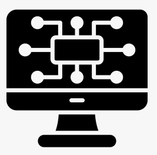

Product Owner
Cuida el valor del producto
- Define la visión y el alcance de HelpDesk-PRO.
- Mantiene y prioriza el Product Backlog.
- Redacta historias de usuario y criterios de aceptación.
- Acepta o rechaza el incremento en la Sprint Review.

Hola
Un espacio para ordenar las incidencias de soporte técnico del proyecto, con un tablero Kanban y el marco de trabajo Scrum.
Proyecto individual · Administración de Proyectos
Arrastra los tickets entre columnas o usa las flechas de cada tarjeta.
Cómo se aplica Scrum en un proyecto individual: roles, Sprint, Definición de Hecho y Product Backlog.
En un equipo de una sola persona, los tres roles se asumen alternando el enfoque según la actividad del día.
Cuida el valor del producto
Cuida que Scrum se aplique bien
Construye el incremento
Un ticket solo pasa a Resueltos / Cerrados cuando cumple estos criterios. Marca los que ya verificaste; puedes agregar o quitar criterios.
| ID | Historia de usuario | Prioridad | Puntos | Destino | Acciones |
|---|